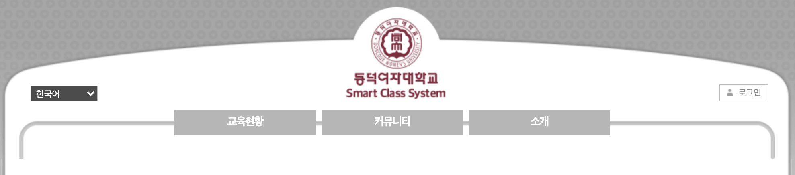

회원가입
동의약관
제 1장 총칙 제 1 조(목적) 본 약관은 국가공간정보포털 웹사이트(이하 "국가공간정보포털")가 제공하는 모든 서비스(이하 "서비스")의 이용조건 및 절차, 회원과 국가공간정보포털의 권리, 의무, 책임사항과 기타 필요한 사항을 규정함을 목적으로 합니다. 제 2 조(약관의 효력과 변경) 1. 국가공간정보포털은 이용자가 본 약관 내용에 동의하는 경우, 국가공간정보포털의 서비스 제공 행위 및 회원의 서비스 사용 행위에 본 약관이 우선적으로 적용됩니다. 2. 국가공간정보포털은 약관을 개정할 경우, 적용일자 및 개정사유를 명시하여 현행약관과 함께 국가공간정보포털의 초기화면에 그 적용일 7일 이전부터 적용 전일까지 공지합니다. 단, 회원에 불리하게 약관내용을 변경하는 경우에는 최소한 30일 이상의 사전 유예기간을 두고 공지합니다. 이 경우 국가공간정보포털은 개정 전 내용과 개정 후 내용을 명확하게 비교하여 회원이 알기 쉽도록 표시합니다. 3. 변경된 약관은 국가공간정보포털 홈페이지에 공지하거나 e-mail을 통해 회원에게 공지하며, 약관의 부칙에 명시된 날부터 그 효력이 발생됩니다. 회원이 변경된 약관에 동의하지 않는 경우, 회원은 본인의 회원등록을 취소(회원탈퇴)할 수 있으며, 변경된 약관의 효력 발생일로부터 7일 이내에 거부의사를 표시하지 아니하고 서비스를 계속 사용할 경우는 약관 변경에 대한 동의로 간주됩니다. 제 3 조(약관 외 준칙) 본 약관에 명시되지 않은 사항은 전기통신기본법, 전기통신사업법, 정보통신윤리위원회심의규정, 정보통신 윤리강령, 프로그램보호법 및 기타 관련 법령의 규정에 의합니다. 제 4 조(용어의 정의) 본 약관에서 사용하는 용어의 정의는 다음과 같습니다. 1. 이용자 : 본 약관에 따라 국가공간정보포털이 제공하는 서비스를 받는 자 2. 가입 : 국가공간정보포털이 제공하는 신청서 양식에 해당 정보를 기입하고, 본 약관에 동의하여 서비스 이용계약을 완료시키는 행위 3. 회원 : 국가공간정보포털에 개인 정보를 제공하여 회원 등록을 한 자로서 국가공간정보포털이 제공하는 서비스를 이용할 수 있는 자. 4. 계정(ID) : 회원의 식별과 회원의 서비스 이용을 위하여 회원이 선정하고 국가공간정보포털에서 부여하는 문자와 숫자의 조합 5. 비밀번호 : 회원과 계정이 일치하는지를 확인하고 통신상의 자신의 비밀보호를 위하여 회원 자신이 선정한 문자와 숫자의 조합 6. 탈퇴 : 회원이 이용계약을 종료시키는 행위 7. 본 약관에서 정의하지 않은 용어는 개별서비스에 대한 별도 약관 및 이용규정에서 정의합니다.